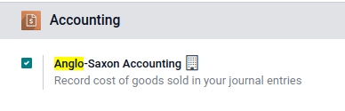

Configuración de la valoración de inventario¶
Las existencias a la mano de una empresa contribuyen a la valoración de su inventario. Ese valor debe figurar en los registros contables de la empresa para mostrar de forma precisa el valor de la empresa y de todos sus activos.
De forma predeterminada, Odoo utiliza una valoración periódica de inventario (también conocida como valoración manual de inventario). Este método implica que el equipo de contabilidad registra asientos contables según el inventario físico de la empresa, y que los empleados del almacén cuentan las existencias. En Odoo, este método se refleja en cada categoría de producto, donde el campo método de costo se establecerá en precio estándar de forma predeterminada, y el campo valoración de inventario se establecerá en manual.

Por otra parte, la valoración automatizada de inventario es un método de valoración integrado que actualiza el valor de inventario en tiempo real mediante la creación de asientos contables cuando se inician movimientos de existencias entre las ubicaciones del inventario de la empresa.
Nota
La valoración automatizada de inventario es un método recomendado para contadores expertos debido a los pasos adicionales en la configuración de asientos contables. Incluso después de la configuración inicial, deberá revisar el método de forma periódica para garantizar la exactitud, y puede ser necesario realizar ajustes de forma continua dependiendo de las necesidades y prioridades de la empresa.
Tipos de contabilidad¶
Los asientos contables dependerán del modo de contabilidad: continental o anglosajón.
Truco
Para comprobar el modo de contabilidad, active el Modo de desarrollador (modo de depuración) y vaya a .
Después, en la barra de búsqueda escriba Contabilidad anglosajona para ver si la función está activa. Si no lo está, entonces está usando el modo de Contabilidad continental.
En la contabilidad anglosajona, los costos de los bienes vendidos (COGS) se registran al vender o entregar los productos. Esto significa que el costo de un bien solo se registra como gasto cuando factura a un cliente por un producto. Para el método de valoración manual debe configurar la cuenta de gastos en Valoración de existencias para el tipo de activo actual. Para el método de valoración **automático**debe configurar la cuenta de gastos en un tipo de Gastos o de Costo de ingresos (por ejemplo, Costo de producción, Costo de bienes vendidos, etc.).
En la contabilidad Continental el costo de un bien se reporta tan pronto como este producto entra a existencias. Por eso, la Cuenta de gastos puede ser ya sea de tipo Gastos o Costo de ingresos, sin embargo, es más común que se configure como una cuenta de Gastos.
Configuración¶
Para hacer cambios a las opciones de valoración de inventario vaya a . En la sección :guilabel:` Valoración del inventario` seleccione el :guilabel:` Método de costo` y las opciones de :guilabel:` Valoración del inventario` deseadas.
Nota
Es posible utilizar distintos ajustes de valoración para categorías de producto distintas.

Metodo de costo¶
Desde la página de configuración de categoría de producto seleccione el Método de costo deseado:
Precio estándar: es el método de costo predeterminado en Odoo. El costo del producto se define de forma manual en el formulario del producto y se utiliza para calcular la valoración. Incluso si el precio en una orden de compra es distinto, la valoración utilizará el costo que se definió en el formulario del producto.
Costo promedio: calcula la valoración de un producto según su costo promedio, dividido entre el número total de existencias a la mano disponibles. Al utilizar este método de costo, la valoración de inventario es dinámica y se ajusta constantemente según el precio de compra de los productos.
Nota
Al elegir costo promedio (AVCO) como el método de costo, si cambia el valor numérico en el campo costo para los productos de la categoría de producto respectiva creará un nuevo registro en el reporte de Valoración de inventario para ajustar el valor del producto. El importe del costo se actualizará de forma automática según el precio promedio de compra, tanto del inventario disponible como de los costos acumulados de las órdenes de compra validadas.
Primeras entradas, primeras salidas (FIFO): rastrea el costo de los artículos entrantes y salientes en tiempo real y usa el precio real de los productos para cambiar la valoración. El precio de compra más antiguo se utiliza como el costo del siguiente bien vendido hasta que venda todo el lote de ese producto. Cuando el siguiente lote de inventario avanza en la cola, se utiliza un costo de producto actualizado basado en la valoración de ese lote en específico. Podría decirse que este método de valoración de inventario es el más preciso por varios motivos, pero es muy delicado con los datos introducidos y a cometer errores humanos.
Advertencia
Cambiar el método de costo impacta mucho la valoración de inventario. Recomendamos consultar a un contador antes de hacer cualquier ajuste.
Ver también
Cuando cambia el método de costo, los productos que ya estaban en existencias que usaban el método de costo estándar no cambian su valor. Las unidades existentes mantienen su valor y cualquier movimiento del producto a partir de entonces afecta el costo promedio, es decir, el costo del producto cambiará. Si el valor en el campo costo en un formulario de producto se cambia de forma manual, Odoo generará un registro correspondiente en el reporte de Valoración de Inventario.
Valoración del inventario¶
La valoración del inventario en Odoo se puede configurar para actualizarse de forma manual o automática. Mientras que la cuenta de gastos se aplica a ambos, las cuentas de Entrada de existencias y Salida de existencias solo se usan para la valoración automatizada.
Vea las secciones Gasto y Entrada y salida de existencias para detalles sobre la configuración de cada tipo de cuenta.
Cuenta de gastos¶
Para configurar la cuenta de gastos vaya a la sección Propiedades de la cuenta de la categoría de producto que quiera (). Después, seleccione una cuenta existente desde el menú desplegable Cuenta de gastos.
Para asegurar que la cuenta seleccionada es del tipo correcto, haga clic en el icono de flecha apuntando hacia la derecha ubicado a la derecha de la cuenta. Después, configure el tipo de cuenta según la información de abajo.
En la contabilidad anglosajona para la valoración automatizada de inventario, configure la cuenta de gastos para gastos. Después haga clic en el icono de flecha apuntando hacia la derecha para ir a la cuenta correcta.
En la ventana emergente seleccione Gastos o Costo de ingreso desde el menú desplegable Tipo.

Para configurar la cuenta de gastos, elija Valoración de existencias en el menú desplegable del campo. Haga clic en el icono de flecha apuntando hacia la derecha para verificar el tipo de cuenta y luego asegúrese de que el tipo sea Activos circulantes.

Configure la Cuenta de gastos al tipo de cuenta Gastos o Costo de ingresos.
Configure la Cuenta de gastos al tipo de cuenta Gastos o Costo de ingresos.
Entrada y salida de existencias (solo automatizadas)¶
Para configurar la Cuenta de entrada de existencias y la Cuenta de salida de existencias vaya a y seleccione la categoría de producto deseada.
En el campo Valoración del inventario seleccione Automatizado para que aparezca la sección Propiedades de cuenta de existencias. Estas cuentas se definen como:
Cuenta de valoración de existencias: cuando se habilita la valoración automatizada de inventario en un producto, esta cuenta contendrá el valor actual de los productos.
Diario de existencias: diario contable en el que los asientos se publican de forma automática cuando la valoración de inventario de un producto cambia.
Cuenta de entrada de existencias: los apuntes del diario de contrapartida para todos los movimientos de entrada de existencias se registrarán en esta cuenta, a menos que se establezca una cuenta de valoración específica en la ubicación de origen. Este es el valor predeterminado para todos los productos en una categoría específica, y también se puede establecer directamente en cada producto.
Cuenta de salida de existencias: los apuntes del diario de contrapartida para todos los movimientos de salida de existencias se registrarán en esta cuenta, a menos que se establezca una cuenta de valoración específica en la ubicación destino. Este es el valor predeterminado para todos los productos en una categoría específica, y también se puede establecer directamente en cada producto.
En la contabilidad Anglosajona las cuentas entrada de existencias y salida de existencias se configuran con diferentes cuentas de Activos circulantes. De esta forma, entregar los productos y facturar el cliente saldan la cuenta Salida de inventario, mientras que recibir los productos y facturar a los proveedores saldan la cuenta Salida de inventario.
Para modificar el tipo de cuenta, haga clic en el icono de flecha que apunta hacia la derecha ubicado del lado derecho de la cuenta de entrada o salida de inventario. En la ventana emergente seleccione el formulario Activos circulantes con el menú desplegable de Tipo.

La cuenta Entrada de inventario está configurada a Existencias provisionales (recibidas), un tipo de cuenta de activos circulantes.¶
En la contabilidad Continental la cuenta de entrada de existencias y la cuenta de salida de existencias están configuradas a la misma cuenta de Activos circulantes. De esa forma, una cuenta puede saldarse cuando los artículos se compran y se venden.
Example
Las cuentas de entrada y salida de existencias se configuran ambas como Existencias provisionales (recibidas), un tipo de cuenta de activos circulantes. También pueden configurarse como Existencias provisionales (entregadas) siempre y cuando las cuentas de entrada y salida estén asignadas a la misma cuenta.
Reporte de la valoración del inventario¶
Para empezar, vaya a . En la parte superior del tablero, cambie el valor del campo al a hoy y ajuste el filtro opciones a desplegar todo para ver todos los datos más recientes a la vez.
Ver también
En la línea de apunte padre activos circulantes, busque la línea de apunte anidada cuenta de valoración de existencias, donde se muestra la valoración total de todo el inventario a la mano.
Puede acceder a información más específica con el menú desplegable cuenta de valoración de existencias. Puede seleccionar libro mayor para obtener una vista detallada de todos los asientos contables, o puede seleccionar apuntes contables para revisar los asientos de diario individualizados que se enviaron a la cuenta. Además, puede agregar anotaciones en el balance general al hacer clic en anotar, llenar la caja de texto y hacer clic en guardar.